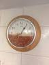

.png)
Beans have been a part of history since the dawn of time. They've influenced the world leaders on their decisions. Ancient pharohs of egypt have used beans to show their status of power. Throughout the years there has been one question that has stayed on the minds of millions. "Where should beans be and where should they not be?" Wars have been fought over this question but in recent years scientists have narrowed it down to a simple list and examples of it. This is the closest we've gotten to answering this question and we're about to show you this sensitive information.
No Way Jose!!

Beans should not be placed in a clock because it gives out false information since it isn't always beans-o-clock
- Beans In A Tube Of Toothpaste
.jpg)
Beans should not be in a tube of toothpaste due to the beans having a special chemical in them that will make your teeth too white
.jpg)
Beans are meant to be enjoyed in moderation but some people take it too far and indulge in the greatness of beans too much and overdose. They are referred to as "Bean Heads"